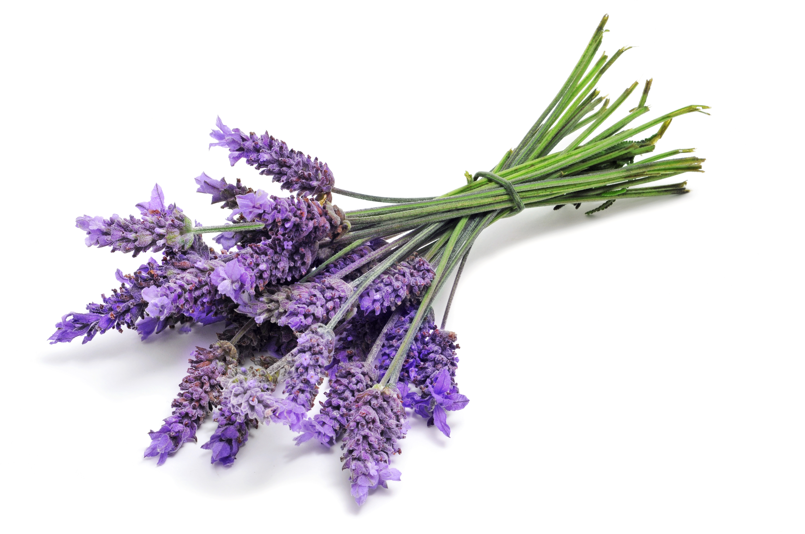
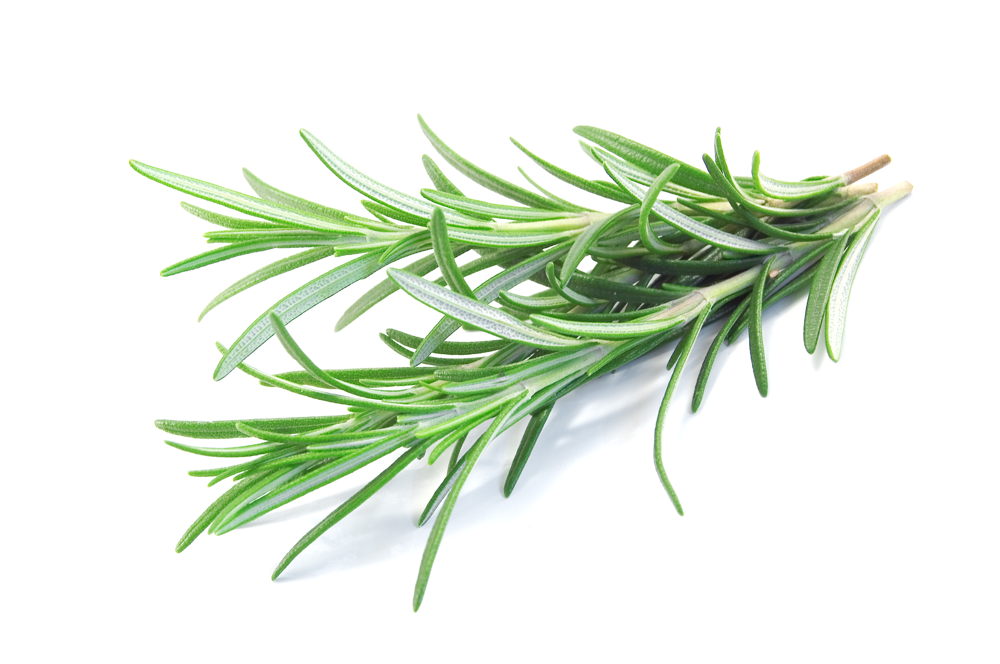
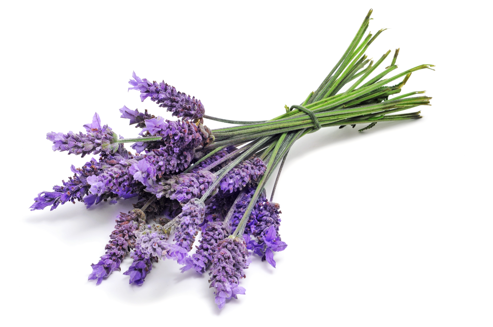
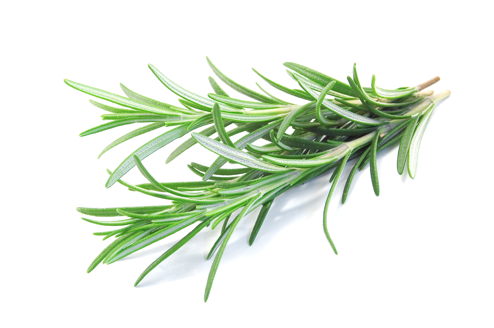

N.A.E.
NATURKOSMETIK - Auf Italienische Art
NEW COLLECTION
N.A.E. NATURALE ANTICA ERBORISTERIA
N.A.E. Naturale Antica Erboristeria ist eine zertifizierte Naturkosmetik-Marke für Gesicht und Körper, die ihren Ursprung in den Schönheitsgeheimnissen der italienischen Natur findet.
Wertvolle, biologisch angebaute Inhaltsstoffe wie Mandarine, Rosmarin, Rose, Olivenöl und Traubenkernöl werden nach traditioneller Expertise zu einzigartigen, verwöhnenden Schönheitsrezepturen vereint.
Mindestens 97% der Inhaltsstoffe sind natürlichen Ursprungs und mindestens 10% aller Inhaltsstoffe aus biologischem Anbau. Alle unsere Gesichts- und Körperpflegeprodukte sind zertifizierte Naturkosmetik und vegan.
Die feinen, natürlichen Düfte und Texturen hauchen jedem Pflegemoment das lebensfrohe, italienische Lebensgefühl – la bella vita – ein.
Ispired by Nature.
 



Natürlich und mit biologisch angebauten Inhaltsstoffen
Unsere Rezepturen sind einzigartige Kompositionen aus biologisch angebauten Zutaten, inspiriert von der reichen Natur Italiens. Für mehr Info klicken Sie auf den Inhaltsstoff!
BIO-OLIVENÖL
Seit Jahrhunderten kultiviert, wird es seit jeher zur Vorbeugung oder Heilung bestimmter Krankheiten eingesetzt. Alle Teile des Baumes sind nützlich: die Frucht, das Blatt, die Blume und die Rinde. Im antiken Griechenland wurden mit Präparaten aus Blättern und Olivenöl alle Arten von Entzündungen behandelt. Reich an Vitaminen, Mineralien und Fettsäuren, ist Olivenöl das älteste italienische Schönheitsgeheimnis.
.jpg)
.jpg)
.jpg)
BIO-OLIVENÖL-Produkte
Ein wahrer Schatz für die Haut, nährt sie, macht sie weich, tonisiert und revitalisiert. Olivenöl ist auch perfekt, um das Haar zu stärken und ihm wieder Glanz zu verleihen.
Wofür steht N.A.E.
in Italien bereits seit vielen Jahrzehnten bekannt und steht seit jeher für Produkte, die natürliche und hochwirksame Inhaltsstoffe mit besonderer Qualität zu zuverlässigen Produkten für die ganze Familie verbinden.
Jeder natürliche Inhaltsstoff hat seine besonderen Eigenschaften, weshalb Antica Erboristeria für jedes Bedürfnis eine individuelle Rezeptur entwickelt hat – bestens abgestimmt auf individuelle Bedürfnisse.
Die Gedanken an Italien - die herrlichen Gerüche, die atemberaubende Natur und die Kunst des Genießens - sind immer mit einem ganz besonderen Lebensstil verbunden. "La Bella Vita" - ein Lebensstil, bei dem man nur das tut, was für einen das Beste ist.
Die Natur Italiens ist voller Schätze und seit Jahrhunderten werden Schönheitsgeheimnisse von Generation zu Generation an italienische Frauen weitergegeben.
N.A.E. Naturale Antica Erboristeria enthüllt diese Geheimnisse der italienischen Schönheit.